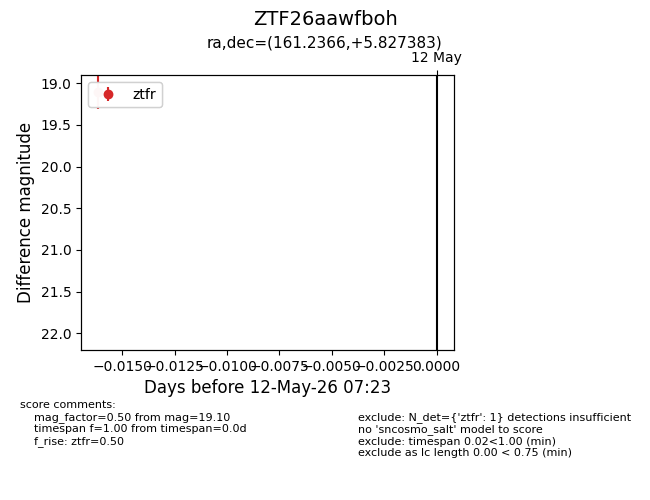
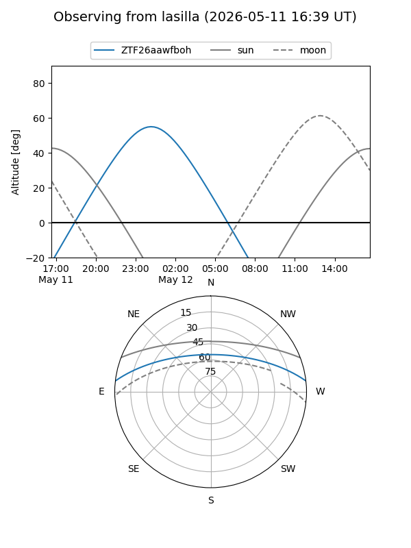
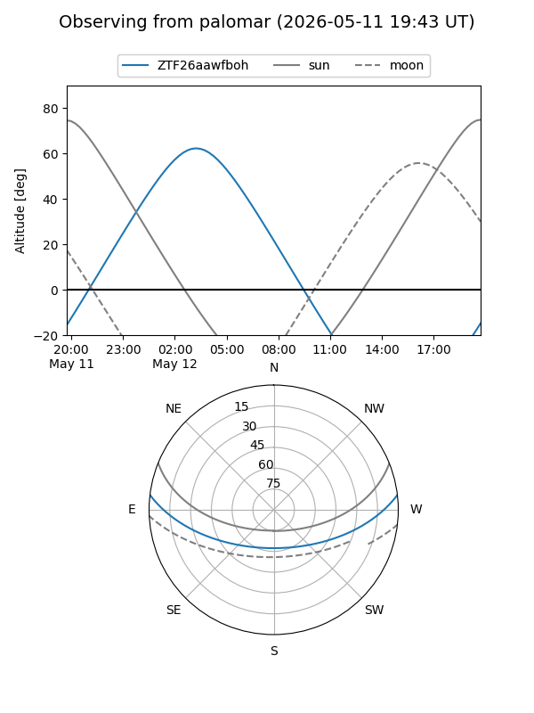

ZTF26aawfboh
Target ZTF26aawfboh at 2026-05-12 07:25
Aliases and brokers:
FINK: link
Lasair: link
ALeRCE: link
alt names
ZTF26aawfboh (ztf,fink_ztf)
Coordinates:
equatorial (ra, dec) = 161.2366,+5.82738
equatorial (HMS+DMS) = 10:44:56.79,+05:49:38.58
galactic (l, b) = (242.4979,+53.15124)
Flags:
Photometry:
last ztfr=19.10
1 ztfr detections
Lightcurve

Visibility


Additional plots